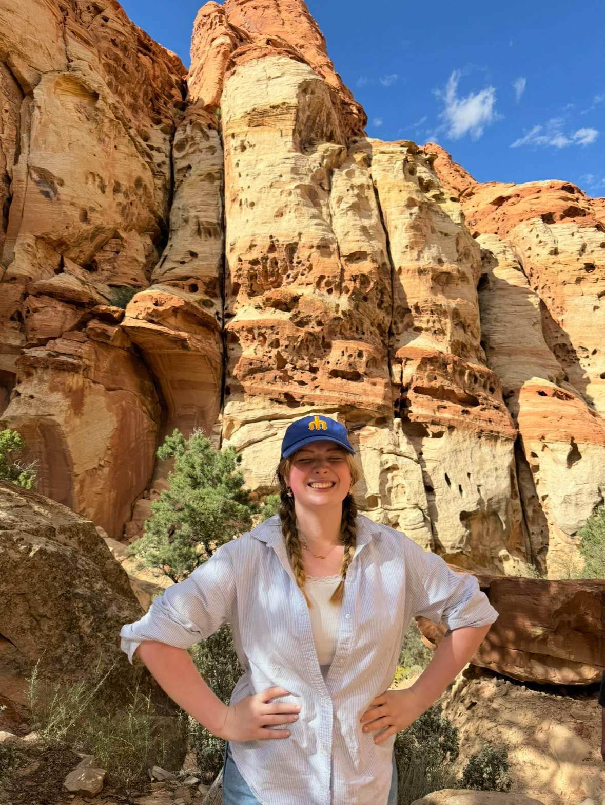

About Me!


Hi! My name is Sophia Robillard and I am an Undergraduate Senior at the University of Washington majoring in Earth & Space Sciences with a minor in Data Science! My passion for earth science began my freshman year of college while attending the University of California in Santa Barbara. In a last minute switch to my course schedule, I decided to take an introductory geology course. Little did I know that "Rocks for Jocks" would change the entire course of my life for the better!
This Fall I will be applying to PhD programs in Geochemistry and Geology!